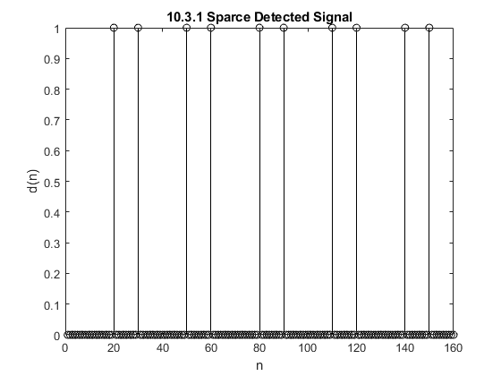

Contents
--- LAB 10: EDGE DETECTION IN IMAGES: UPC DECODING --- %%
% DESCRIPTION: % Utilize FIR Filters to detect edges in images using MatLab inorder to % decode UPC barcodes. Required functions for this lab include % dconvdemo() and firfilt().
SECTION 10.1: Pre-Lab
% TERMINOLOGY: % nn: 1xn Time Indices % xx: 1xn Input signal % bb: 1xk Filter Coefficients % yy: 1xk Output signal % EQUATIONS: % length(yy) = length(xx) + length(bb) - 1 % DEMO: % dconvdemo(); % Open the dconvdemo directory and type this command into % % the command console.
SECTION 10.2: Warm-up
% 10.2.1 Using dconvdemo() do the following: % (a) Find the convolution of two impulses δ(n-3)*δ(n-5) % % (b) Filter the input signal x(n)=(-3)[u(n-2)-u(n-8)] with a first- % difference filter such that y(n)=x(n)-x(n-1) % % We can determine from y(n) that bb = [1 -1] % % (c) Explain why y(n) is zero for most of n % % It is due to the coefficients bb. During the filtering process, % any identical values of neighboring x(n) are cancelled during % the convolution stage. This makes the first-difference filter a % useful tool for edge detection in images. % % (d) Convolve two rectangular pulses: % Pulse One: Amplitude of 2, Length of 7 % Pulse Two: Amplitude of 3, Length of 4 % % (e) State the length and maximum amplitude of the convolution from (d) % % (f) Explain why some values of y(n) are positive or negative % % The first-difference filter outputs a positive difference when the % next value of x is larger than the previous element. Likewise, the % output is negative when the next value of x is less than the % previous element. % 10.2.2: Filtering Images via Convolution % Load an image and convert to monocrhome imdata = imread('bin/monkey.png'); newmap = rgb2gray(imdata); % Get image array size [rows,cols] = size(newmap); % Define Filter bb = [1 -1]; % Filter image row-by-row yy = zeros(rows+1,cols+1); for i = 1:rows yy(i,:) = yy(i,:) + abs(conv(newmap(i,:), bb)); end for i = 1:cols yy(:,i) = yy(:,i) + abs(conv(newmap(:,i), bb)); end % Filter Out Noise t = 50; yy = 255*(abs(yy) > t); % Display Output Image figure(221); subplot(2,1,1); imshow(newmap); title('10.2.2 Example of Edge Detection') subplot(2,1,2); imshow(yy);
SECTION 10.3: FIR Filtering of Images
FIR Filtering can be used to produce special effects including: 1. Edge Detection 2. Echo 3. Deconvolution
In this section, we will use FIR filtering to decode barcodes by using the first-difference filter on UPC barcode images.
10.3.1: Finding Edges
Implement the first-difference FIR filter on the following input signal:
xx = 255*(rem(1:159,30)>19); bb = [1 -1]; % The filtered output is yy = firfilt(bb, xx); % (a) Plot the input and output waveforms figure(311) subplot(2,1,1); stem(xx,'k'); title('10.3.1 First-difference FIR Filter') ylabel('x(n)') subplot(2,1,2); stem(yy,'k'); xlabel('n'); ylabel('y(n)'); % (b) Explain why the output appears the way it does. % % This is a result of edge filtering. The convolution x(n)*h(n) can be % described by % % y(n) = sum_{k=0}^{M-1}b(k)x(n-k) % % The edge detection property of the first-difference FIR filter produces % positive magnitudes at transitions where x(n) < x(n+1), and it produces % negative magnitudes where x(n) > x(n+1). % (c) Determine the length of y(n) and explain how its length is related to % the length of x(n) and the length of the FIR filter. % % Due to the process of convolution, the length of the output will not % always equal the length of the input. The output length can be % determined by % % length(yy) = length(xx) + length(bb) -1 % % In the case of the first-difference FIR filter, the length of y(n) will % always be one greater than the length of x(n). Therefore, the length % of the output for this case is 160. % (d) Use a threshold to convert the output into binary values and store % them in a new array d(n). % Threshold t = 10; % Sparce Detected Signal dd = (abs(yy) > t); % Plot d(n) figure(312); stem(dd,'k'); title('10.3.1 Sparce Detected Signal') ylabel('d(n)'); xlabel('n'); % (e) Use the find() function to create a new array l(n) which will hold % the element address (location) of the detected edge in d(n). ll = find(dd); % Plot l(n) figure(313); stem(ll,'k'); title('10.3.1 Edge Location Signal') ylabel('l(n)'); xlabel('k'); % The binary filtered signal only has one mark per transistion. Note that % the edge is located following the transition and not preceding it.
10.3.2: Bar Code Detection and Decoding
A barcode consists of alternating black and white bars with varying lengths. The Universal Product Code (UPC) dictates the required combination of widths and numbers of bars that correspond to a number from 0 to 9. The standard uses a 4-bar combo per number with a total of 12 digits per code. For this next part of the lab, we will use FIR filtering to detect the edges of a barcode and then use that data to decode the value of the barcode.
% (a) Import the image 'HP110v3.png' into MatLab and extract a horizontal % cross-section of the image into x(n) % Import Image of Bar Code imdata = imread('bin/HP110v3.png'); % Extract one line of the Bar Code xx = imdata(100,:); % (b) Filter the signal x(n) with a first-difference FIR filter and plot % the input and output. % Define the Filter bb = [1 -1]; % Filter signal yy = firfilt(bb, xx); % Plot figure(321) subplot(2,1,1); stem(xx,'k'); title('10.3.2 Bar Code #1 FIR Filter') ylabel('x(n)') subplot(2,1,2); stem(yy,'k'); xlabel('n'); ylabel('y(n)'); % (c) Create a sparce detected signal d(n) and then create a location % signal l(n). Plot the results. % Threshold t = 100; % Sparce Detected signal dd = (abs(yy) > t); % Location signal ll = find(dd); % Plot d(n) figure(322); stem(ll,'k'); title('10.3.2 Edge Location Signal') ylabel('l(n)'); xlabel('n'); % (d) Apply a first-difference filter to the location signal called D(n) % and make a plot. Explain hwo the plot of D(n) conveys the idea that % there are approximately four different widths in the bar code. DD = firfilt(bb, ll); % Delete outlier (just for plot visual, the next filter would have % eliminated it anyway) DD(end) = []; % Plot figure(323) subplot(2,1,1); stem(ll,'k'); title('10.3.2 Bar Code #1 Filtered Location Signal') ylabel('l(n)') subplot(2,1,2); stem(DD,'k'); xlabel('n'); ylabel('\Delta(n)'); % By inspection of D(n), the spacing between edges giving a distinct sizing % of four different bar widths that are multiples of 8 units wide. % (e) Prove that the total width of a valid 12-digit bar code is equal to % 95u. % The 12-digit bar code is composed of: % - 3 Start Bars of u length % - 3 Stop Bars of u length % - 5 Middle Bars of u length % - 12 Digits, each with four bars with total width of 7u % Thus, the total length is % 3u + 3u + 5u + 12*7u = 95u % (f) Determine the unit width of the bar code % Filter out extra lines while(length(DD) > 59) % Estimate Basic unit width u = sum(DD)/95; c1 = abs((DD(1)-u)/u); c2 = abs((DD(end)-u)/u); % Delete first and last signals if they are not close to unit length if (c1 > 0.01) DD(1) = []; end if (c2 > 0.01) DD(end) = []; end end % Basic unit width u = sum(DD)/95 % (g) Convert the bar widths into unit widths. % Per Unit Signal uu = round(DD/u); % Plot figure(324) stem(uu,'k'); title('10.3.2 Bar Code #1 Normalized Signal') ylabel('u(n)') xlabel('n'); % (h) Decode the Bar Code code = decodeUPC(uu)
u =
7.8947
ssbeg =
1 1 1
code =
8 8 2 7 8 0 4 5 0 1 6 5
10.3.2 (j) Process Bar Code #2
% Import Image of Bar Code imdata = imread('bin/OFFv3.png'); % Extract one line of the Bar Code xx = imdata(100,:); % Define the Filter bb = [1 -1]; % Filter signal yy = firfilt(bb, xx); % Plot figure(325) subplot(2,1,1); stem(xx,'k'); title('10.3.2 Bar Code #2 FIR Filter') ylabel('x(n)') subplot(2,1,2); stem(yy,'k'); xlabel('n'); ylabel('y(n)'); % Threshold t = 100; % Sparce Detected signal dd = (abs(yy) > t); % Location signal ll = find(dd); % Plot d(n) figure(326); stem(ll,'k'); title('10.3.2 Edge Location Signal') ylabel('l(n)'); xlabel('n'); % Apply a first-difference filter to the location signal DD = firfilt(bb, ll); % Filter out extra lines while(length(DD) > 59) % Estimate Basic unit width u = sum(DD)/95; c1 = abs((DD(1)-u)/u); c2 = abs((DD(end)-u)/u); % Delete first and last signals if they are not close to unit length if (c1 > 0.01) DD(1) = []; ll(1) = []; end if (c2 > 0.01) DD(end) = []; ll(end) = []; end end % Basic unit width u = sum(DD)/95 % Per Unit Signal uu = round(DD/u); % Plot figure(327) subplot(2,1,1); stem(ll,'k'); title('10.3.2 Bar Code #2 Filtered Location Signal') ylabel('l(n)') subplot(2,1,2); stem(uu,'k'); xlabel('n'); ylabel('u(n)'); % Decode the Bar Code code = decodeUPC(uu)
u =
2.6737
ssbeg =
1 1 1
code =
0 4 6 5 0 0 7 0 3 1 9 5